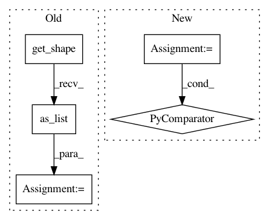

c572ec4e20ce24417e25e2ee27af820e76ee20f8,txtgen/modules/connectors/connectors.py,,_mlp_transform,#Any#Any#Any#,44
Before Change
// flatten inputs
flat_input = nest.flatten(inputs)
// batch_size = flat_input[0].shape[0].value
shape = inputs.get_shape().as_list()
dim = reduce(lambda x, y: x*y, shape[1:])
flat_input = [tf.reshape(input_, ([-1, dim])) for input_ in flat_input]
concat_input = tf.concat(flat_input, 1)
After Change
flat_input = nest.flatten(inputs)
// batch_size = flat_input[0].shape[0].value
// TODO(zhiting): correct ?
dims = [_get_tensor_depth(x) for x in flat_input]
flat_input = [tf.reshape(x, ([-1, d])) for x, d in zip(flat_input, dims)]
//shape = inputs.get_shape().as_list()
//dim = reduce(lambda x, y: x*y, shape[1:])
//flat_input = [tf.reshape(input_, ([-1, dim])) for input_ in flat_input]
In pattern: SUPERPATTERN
Frequency: 3
Non-data size: 5
Instances
Project Name: asyml/texar
Commit Name: c572ec4e20ce24417e25e2ee27af820e76ee20f8
Time: 2017-11-26
Author: zhitinghu@gmail.com
File Name: txtgen/modules/connectors/connectors.py
Class Name:
Method Name: _mlp_transform
Project Name: NifTK/NiftyNet
Commit Name: 6b48055fdfe3c628833ed26ca394ef2fb1d97f82
Time: 2017-10-26
Author: wenqi.li@ucl.ac.uk
File Name: niftynet/layer/resampler.py
Class Name: ResamplerLayer
Method Name: _resample_nearest
Project Name: NifTK/NiftyNet
Commit Name: 534c4dc7423681faab78d1829c1ec3c31ffb8330
Time: 2018-01-30
Author: wenqi.li@ucl.ac.uk
File Name: niftynet/layer/resampler.py
Class Name: ResamplerLayer
Method Name: _resample_inv_dst_weighting